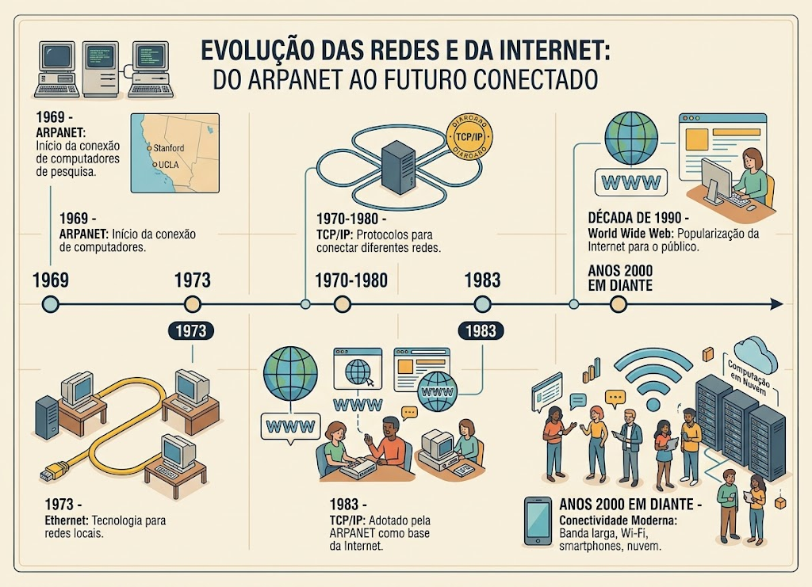

Dos primeiros experimentos à Internet
A evolução das redes de computadores começou a ganhar força durante a década de 1960. Um dos principais marcos dessa história foi a criação da ARPANET.

Principais momentos
- 1969 - ARPANET: a ARPANET começou a operar conectando computadores de instituições de pesquisa.
- 1973 - Ethernet: surgiu uma importante tecnologia para redes locais, permitindo a comunicação entre computadores.
- 1970-1980 - TCP/IP: foram desenvolvidos protocolos que permitiram conectar diferentes redes.
- 1983 - TCP/IP: o protocolo TCP/IP passou a ser utilizado pela ARPANET, tornando-se uma das bases da Internet moderna.
- Década de 1990: a World Wide Web ajudou a popularizar a Internet entre o público.
- Anos 2000 em diante: banda larga, Wi-Fi, smartphones e computação em nuvem transformaram a maneira como utilizamos as redes.
Curiosidade
O primeiro comando enviado pela rede não chegou completo
O objetivo era que um estudante da Universidade da Califórnia em Los Angeles (UCLA) enviasse a palavra Login para um outro computador, que estava no Instituto de Pesquisa de Stanford (SRI). A distância era de 560 km, porém acabou que deu errado e chegou a penas as letras "lo"
— Olhar Digital